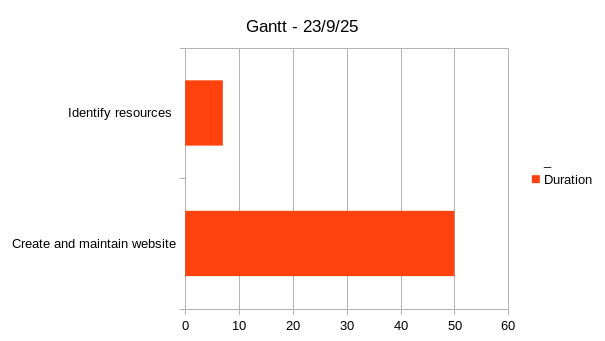
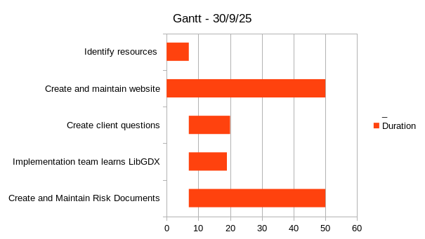
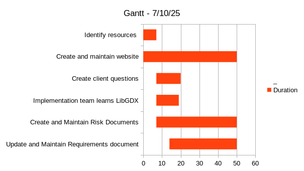
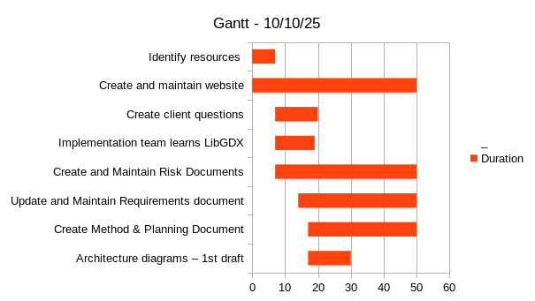
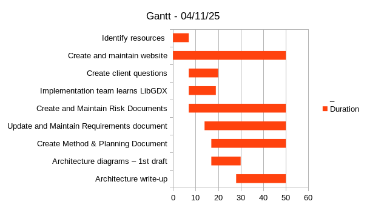

--- Cohort 1, Group 1 Website ---
-- Deliverables: --
-- Gantt Charts --
NOTE: Meetings were held weekly on Tuesdays and Fridays - some of these meetings were just checking the status of each of the ongoing tasks and doing them in a separate environment;
Some charts have gaps of more than a week as a result, as we didn't have anything new to add to the chart on those days.




